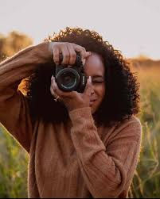

BIOGRAPHY
Hi, I'm Purity, a passionate photographer with a love for capturing the beauty of everyday moments. With years of experience in portrait, landscape, and event photography, I strive to create images that tell a story and evoke emotion. My journey into photography started as a hobby and quickly turned into a lifelong passion. Through my lens, I aim to highlight the essence of each subject, bringing their unique stories to life.
Portfolio


if you like my work and want to collaborate, feel free to reach out!
ABOUT

I am a professional photographer based in Nairobi, Kenya. My love for photography began at a young age, and I have since honed my skills to capture the beauty of the world around me. I specialize in portrait, landscape, and nature photography, and I am always looking for new opportunities to showcase my work. Whether you're looking for a photographer for capturing your special moment, I am here to help. Contact me today to learn more about my services and to book a session.
Thank you for visiting my site. I invite you to browse through my gallery, learn more about my services, and feel free to reach out if you'd like to collaborate or inquire about bookings. Let me help you turn your moments into timeless memories.
Services

Portrait Photography
Whether you're looking for a professional headshot, family portrait, or senior photos, I offer a range of portrait photography services to suit your needs.

Landscape Photography
From scenic views to city skylines, my landscape photography captures the beauty of the world around us in stunning detail.

Nature Photography
I offer nature photography services to help you capture the moment.
CONTACTS
phone: +254 728740371